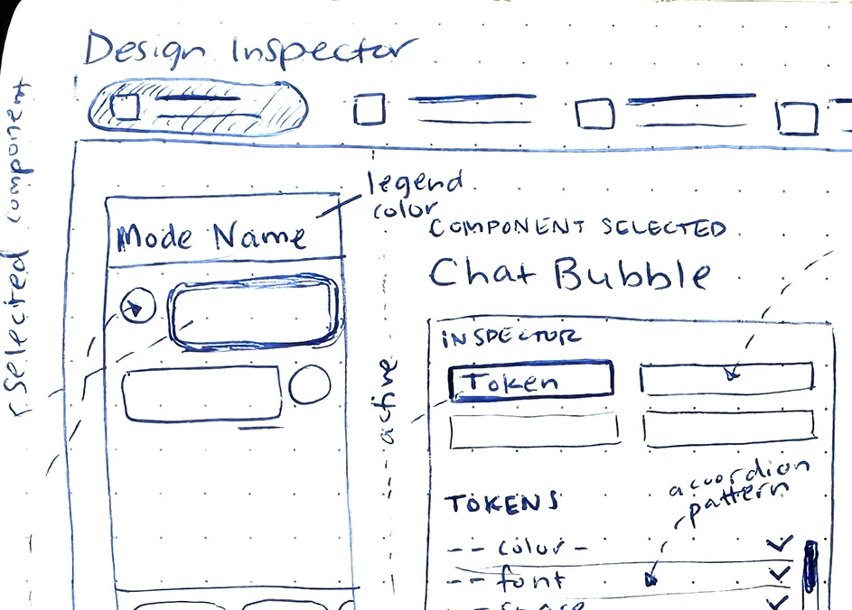
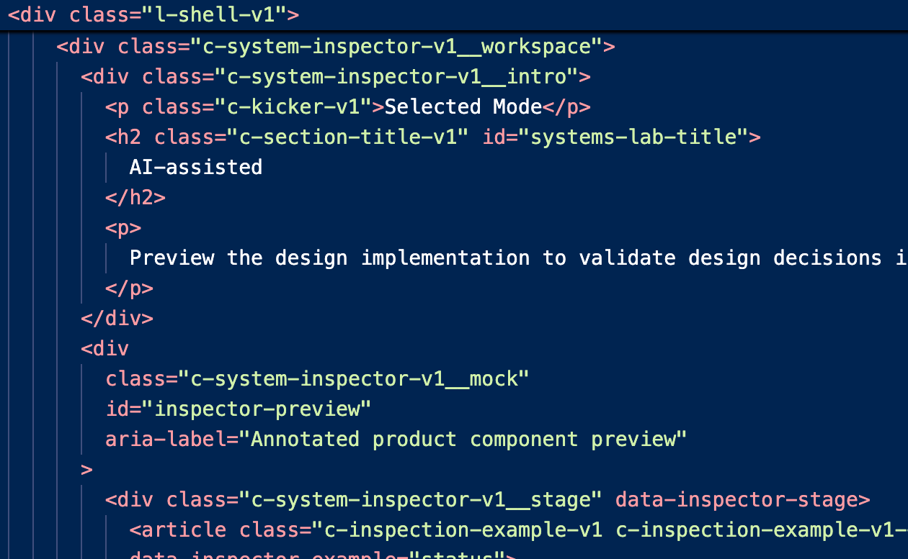
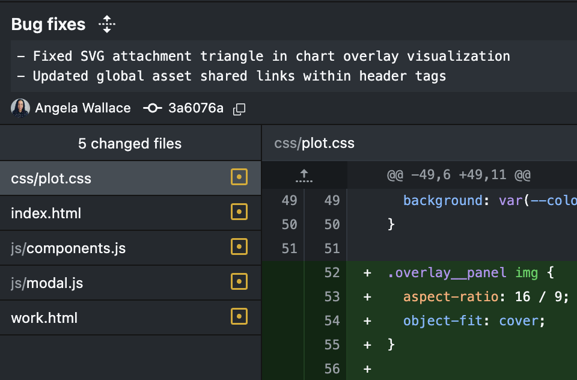

Designing with AI
Design Process
Overview
I take product ideas from concept to solution. My process combines product thinking, visual design, front-end prototyping, and structured documentation to reduce ambiguity before implementation. AI accelerates exploration and execution, while I remain responsible for defining the direction, evaluating tradeoffs, reviewing the work, and deciding what belongs in the final product.
Workflow focus
- Define the product direction
- Translate ideas into working interactions
- Evaluate technical and design tradeoffs
- Document behavior and implementation intent
- Prepare the work for stakeholder and engineering review
Defining the product
{kind=link}

To gain clarity, I'll sketch to work out interactions between iterative design passesI begin by clarifying the problem, audience, constraints, and intended outcome. Sketching helps me work through interactions away from the screen, while AI helps surface missing states, challenge assumptions, and compare possible directions. I use those inputs to define the product structure, refine hierarchy, and decide what should move forward. The first output is never the solution; I review it against the original intent before investing in high-fidelity design or code or implementation.
Discovery Methods include:
- Clarify product goals and intended outcomes
- Use sketches to make quick decisions before visual refinement begins
- Challenge assumptions with AI while preserving the original product intent
- Compare early directions before committing design effort
- Refine hierarchy and features through repeated critique and decision making
GoalThe concept becomes clear enough to evaluate before high-fidelity design, reducing wasted effort while keeping product decisions under my control.
Reasoning through ambiguity
I use conversation with AI as a structured reasoning process rather than a one-step prompt. I establish product context, document prior decisions, define constraints, and ask targeted questions to expose tradeoffs, test assumptions, and identify missing requirements. I compare recommendations against the original design intent, reject unnecessary complexity, and redirect the work when needed. The value is not the first answer; it is making the problem clearer before committing to a direction forward.
Reasoning methods include:
- Establish context before asking for recommendations
- Define constraints that narrow the problem without limiting exploration
- Question recommendations and compare alternatives against established product requirements carefullycommitting design effort
- Protect design intent during iterative AI conversations
- Reduce unnecessary complexity before decisions move into design or code
GoalStructured conversations expose tradeoffs earlier, preserve relevant context, and help me make clearer decisions without treating AI output as authority.
Building a working prototype
{kind=link}

I use VS Code to edit prototypes and perform code reviews.I translate approved design direction into working HTML, CSS, and JavaScript prototypes developed in GitHub branches. Working code lets me evaluate responsive behavior, component states, transitions, motion, tooltips, and data visualizations that static screens cannot fully communicate. I direct the implementation, review the structure in the browser and code, test each iteration, and make targeted edits when the agent adds unnecessary complexity, departs from the design system, or requires a simpler solution overall.
What I prototype
- Build responsive interfaces in working code
- Test interactions and states directly inside the browser environment
- Review generated structure for reuse, clarity, maintainability, and system alignment
- Refine motion, transitions, and component behavior iteratively
- Make targeted code edits when simpler solutions better preserve intent
GoalWorking prototypes let me validate behavior beyond static screens while strengthening technical judgment and keeping implementation aligned with design direction.
Live Prototype: Design Inspector
Design Inspector is an internal product concept I developed to make the reasoning behind an interface easier for designers and developers to understand. The prototype exposes selected components with curated information about tokens, classes, states, and accessibility requirements. I used AI to reason through component scoping, runtime inspection, data annotation, panel behavior, and architectural tradeoffs, while I made the final product decisions, refined the visual system, and preserved designer-curated intent through each iteration.
Design Inspector scope
- Inspect selected components and their relationships
- Surface curated intent alongside runtime implementation details for review
- Document tokens, classes, states, accessibility requirements, and component behavior clearly
- Separate automated discovery from designer-curated product intent
- Reuse existing classes and tokens within a lightweight inspection architecture
GoalDesign Inspector makes design intent easier to inspect, discuss, and validate across product roles without replacing the designer’s final judgment.
Preparing for implementation
{kind=link}

Pushing web changes in GithubOnce an experience has been evaluated, I convert approved decisions into structured documentation and implementation guidance. Depending on the product, that may include product briefs, feature specifications, behavior specifications, functional requirements, interaction notes, accessibility guidance, code examples, and implementation constraints. I also organize Markdown documentation, prepare GitHub branches, review changes, document bug fixes, and preserve the reasoning behind important decisions so engineers receive a working model and a clear record of intended behavior.
Handoff deliverables
- Translate approved decisions into implementation documentation
- Prepare product briefs and detailed specifications for engineering review
- Document behavior, requirements, accessibility guidance, and implementation constraints consistently throughout
- Preserve decision history through Markdown and GitHub
- Review branches and bug fixes before implementation guidance is finalized
GoalEngineers receive clearer implementation guidance, documented reasoning, and working references that reduce ambiguity without requiring design intent to be reconstructed.
Judgment over generation
AI increases the range and speed of work I can execute, but it does not replace judgment or accountability. I remain responsible for determining which problem should be solved, whether a recommendation is appropriate, how the experience should feel, and when the work is ready to move forward. I validate output through review, interaction testing, code inspection, and established requirements, rejecting or redirecting recommendations when they introduce unnecessary complexity or weaken design intent.
What remains human-directed
- Keep product decisions under human ownership
- Validate outputs through testing, review, and established product requirements
- Reject recommendations that add complexity without improving the intended experience
- Redirect implementation when design intent becomes weakened
- Use AI as a partner while retaining accountability for outcomes
ResultAI extends my execution range, but I remain accountable for product direction, quality, implementation choices, and deciding when work advances.
Reflection

This process has expanded how far I can carry a product idea without losing the design intent along the way. I can define the problem, shape the interface, prototype the behavior, inspect the implementation, and document the decisions in one connected workflow.
“The value is not generation alone. It is the ability to move from an unclear idea to a working, reviewable, and documented product direction.”